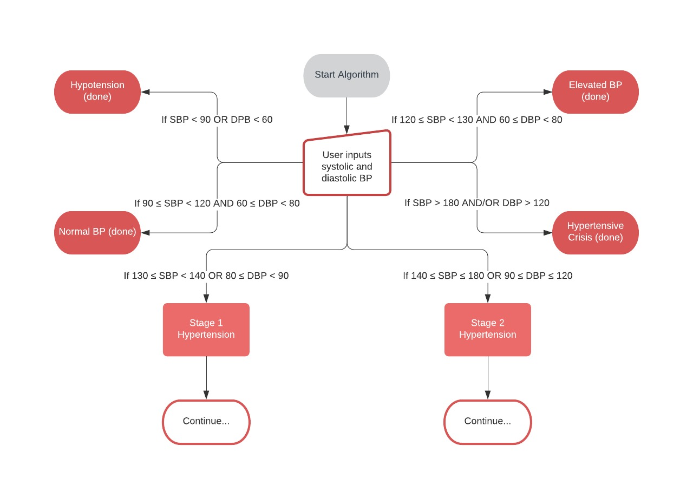

Please enter the patient's systolic and diastolic blood pressures below:
Try inputting different SBP and DBP values to see the different outcomes* below:
*SBP and DBP combinations that fall into two different outcomes will result in the more hypertensive condition being the diagnosis (e.g., SBP = 135 mm Hg and DBP = 100 mm Hg results in the Stage 2 Hypertension rather than Stage 1 Hypertension).
{% endblock %}